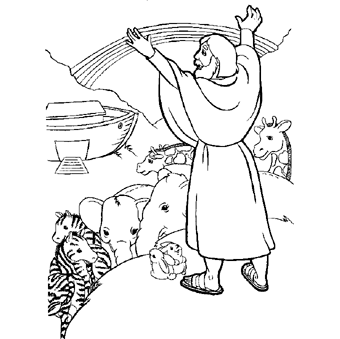

Across:
1.
John's message was to ________ . (vs.2)
2. Jesus came
form Galilee to the Jordan river to be ____________ by John.
(vs.13)
3. John ate ___________ and honey in the desert.
(vs.4)
4. Many people confessed their sins and were
baptized by John in the ________ river. (vs.6)
Down:
1.
When Jesus came out of the water John saw the spirit of God
descent like a ________ on Jesus. (vs.16)
2. John wore
clothes made of _________ hair. (vs.4)
3. John
___________ in the desert of Judea. (vs.1)
4. ___________
asked John to baptize him. (vs.13-15)

What was God's covenant with Noah?
__________________________
__________________________
__________________________What is the sign of God's covenant with Noah?
__________________With whom, beside Noah, did God make the covenant?
__________________________
__________________________